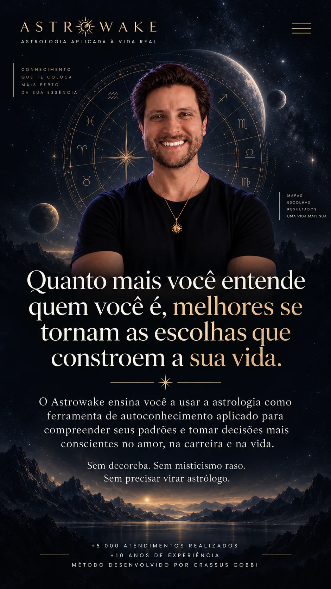

Marte
Deixa de ser um símbolo num livro.
Você começa a enxergar Marte na iniciativa, na coragem, no conflito, no desejo e na maneira como alguém parte para a ação.

Acesso imediato · 1 ano de acesso · conteúdo online
![Você toma decisões todos os dias. Mas quase ninguém ensina você a entender quem está tomando essas decisões. Por que você se envolve com determinadas pessoas? Por que algumas situações profissionais se repetem? Por que certos ambientes despertam o melhor de você e outros parecem consumir toda a sua energia? Por que algumas escolhas parecem tão naturais enquanto outras exigem um esforço enorme para serem sustentadas? Existe uma camada por trás das suas escolhas que nem sempre é consciente. E quanto mais você compreende essa camada, mais capacidade você desenvolve para escolher de forma intencional. É justamente aí que a astrologia pode deixar de ser entretenimento e se tornar uma ferramenta real de autoconhecimento.](assets/secao-2.webp)
O problema não é falta de informação
Talvez você já tenha feito terapia, lido livros, acompanhado conteúdos de desenvolvimento pessoal e aprendido muito sobre si. Mas ainda existem comportamentos que parecem difíceis de explicar.
Você reconhece algumas tendências. Percebe alguns padrões. Sabe até quando determinada situação está se repetindo. Mas nem sempre entende de onde aquilo vem ou como diferentes partes da sua personalidade se conectam.
O mapa astral organiza justamente essas camadas. Ele mostra tendências, necessidades, formas de agir, maneiras de se relacionar, pontos de tensão, talentos e diferentes áreas da vida.
O problema é que a astrologia costuma ser ensinada de uma forma tão complexa que a maioria das pessoas nunca consegue chegar nessa profundidade.
Astrologia não precisa ser uma enciclopédia
Você não precisa decorar centenas de significados para começar a compreender um mapa. Sol em um signo. Lua em outro. Ascendente. Vênus. Marte. Casas. Aspectos.
Quando tudo isso é ensinado como uma lista interminável de definições, a astrologia começa a parecer um idioma impossível.
E quando você aprende a entender os personagens dessa história, tudo começa a fazer muito mais sentido.
O método
Esse é o princípio que conduz o Astrowake. Em vez de aprender astrologia apenas pela memorização, você começa a associar os arquétipos a comportamentos, pessoas, situações e experiências que já conhece.
Deixa de ser um símbolo num livro.
Você começa a enxergar Marte na iniciativa, na coragem, no conflito, no desejo e na maneira como alguém parte para a ação.
Deixa de ser “o planeta do amor”.
Você começa a perceber Vênus naquilo que alguém valoriza, deseja, aprecia e na forma como estabelece vínculos.
Deixa de ser apenas um conceito.
Você começa a reconhecê-lo nos limites, responsabilidades, medos, estruturas e processos de amadurecimento.
Você deixa de apenas decorar astrologia e começa a enxergá-la acontecendo na vida.
O que muda
Quando você entende melhor a sua própria natureza, começa a perceber com mais clareza:
E essa compreensão começa naturalmente a atravessar todas as áreas da sua vida.
Relacionamentos · Carreira · Família · Escolhas
Limites · Projetos · Direção
Para quem é o Astrowake
Ele é especialmente para você que:
Você não precisa querer trabalhar como astrólogo. Você pode aprender astrologia simplesmente porque deseja compreender melhor a si mesmo.
O que você recebe
Do zero à interpretação prática.
Um caminho progressivo para você compreender os fundamentos da astrologia e aprender a conectar os diferentes elementos de um mapa.
Entenda como utilizar a formação e qual caminho seguir para aproveitar melhor o método.
Construa a base necessária para compreender o mapa como um sistema completo.
Conheça os arquétipos que formam a narrativa astrológica e comece a reconhecê-los na vida real.
Entenda as diferentes formas de expressão da energia zodiacal sem depender de definições decoradas.
Aprenda a combinar planeta + signo e comece a desenvolver interpretações próprias.
Descubra em quais áreas da vida cada energia se manifesta.
Entenda como os diferentes elementos do mapa conversam entre si, criando facilidades, tensões e dinâmicas internas.
Explore temas ligados às vulnerabilidades, feridas e processos de desenvolvimento revelados pelo mapa.
Aprenda a unir os elementos e transformar informações separadas em uma leitura coerente.
Aulas e aprofundamentos para observar conceitos sendo aplicados a casos e situações reais.
Conteúdos complementares para aprofundar e acelerar sua compreensão.
Além da formação
Bônus 01
Depois de compreender quem você é, aprenda a observar os ciclos que está vivendo. O mapa natal representa uma estrutura; os trânsitos mostram o céu em movimento interagindo com essa estrutura ao longo do tempo.
Saturno · Urano · Plutão
Uma nova camada de leitura para compreender períodos de amadurecimento, transformação, ruptura e mudança.
Valor percebido R$ 997
Bônus 02
Você não precisa depender da memória. A apostila funciona como material de apoio e consulta durante o seu aprendizado.
Um conteúdo organizado para que você possa rever conceitos, símbolos e associações sempre que precisar — ideal para acompanhar as aulas e construir sua própria referência de estudo.
Valor percebido R$ 97
Comunidade
Aprender astrologia se torna muito mais fácil quando você começa a observar mapas, histórias e interpretações reais. Um espaço fechado para troca, aprofundamento e conexão entre alunos.
1 encontro por mês com Crassus
Para análise de casos, dúvidas, interpretações e aprofundamentos — porque algumas das maiores compreensões surgem quando você vê a astrologia acontecendo na vida de alguém.
Valor percebido R$ 397
A transformação
você vê um símbolo.
começa a enxergar um padrão.
lê “Vênus em determinado signo”.
percebe aquilo acontecendo na forma como alguém ama.
vê Saturno em uma casa.
entende melhor por que determinada área exige tanto amadurecimento.
Pouco a pouco, o mapa deixa de parecer um desenho complicado. Ele começa a fazer sentido.
E conforme o mapa começa a fazer sentido, você também começa a perceber aspectos de si mesma que antes pareciam desconectados.
Quem vai conduzir você
Estuda e trabalha com astrologia há mais de uma década. Ao longo dessa trajetória, realizou mais de 5.000 atendimentos, ensinou centenas de alunos e desenvolveu uma forma própria de transmitir astrologia de maneira simples, prática e conectada à vida cotidiana.
Sua relação com esse conhecimento também atravessa gerações: a astrologia faz parte da história de sua família há décadas.
Mas talvez o principal diferencial do Crassus esteja justamente na maneira como ele ensina.
O objetivo é fazer você compreender.
A oferta
Mas você não vai investir esse valor.
Hoje, seu acesso anual é de
Acesso imediato · 1 ano de acesso · conteúdo online
Antes de decidir
“Mas eu não quero trabalhar com astrologia.”
Ótimo. Você não precisa.
O Astrowake não foi criado apenas para quem deseja atender clientes ou construir uma carreira como astrólogo. A proposta é permitir que você utilize esse conhecimento primeiro na pessoa mais importante dessa história: você.
Para compreender seus padrões. Observar suas relações. Entender seus potenciais. E desenvolver uma visão mais profunda sobre as escolhas que constroem sua vida.
“Minha rotina já é corrida.”
Por isso o método não foi construído em torno de horas intermináveis de memorização. Você pode avançar progressivamente, assistir às aulas no seu ritmo e utilizar pequenos períodos do dia para revisar e aplicar os conceitos.
O objetivo não é transformar astrologia em mais uma obrigação. É permitir que ela se torne uma ferramenta que você naturalmente começa a usar.
Astrologia não precisa dizer o que você deve fazer. Ela pode ajudar você a enxergar melhor quem está fazendo a escolha.
Se você sente que chegou o momento de aprofundar seu autoconhecimento e aprender uma linguagem capaz de revelar nuances que antes passavam despercebidas: o Astrowake é o seu próximo passo.
Quero começar o AstrowakeAcesso imediato à formação completa + bônus + comunidade
Deixe seu nome e WhatsApp para levarmos você ao pagamento já com os dados preenchidos — e para conseguirmos te ajudar se algo travar.
Pagamento processado pela Hotmart